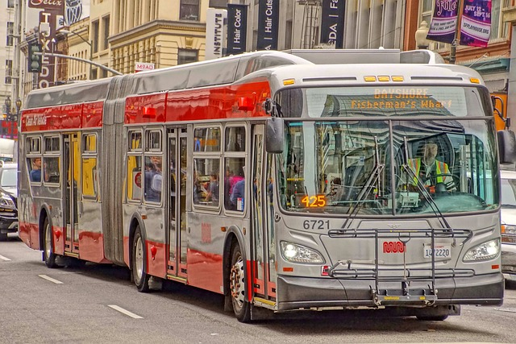
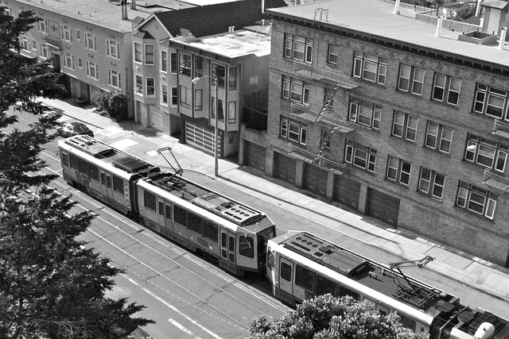
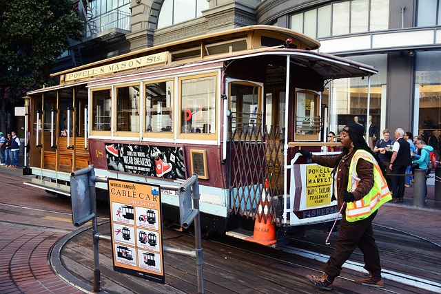
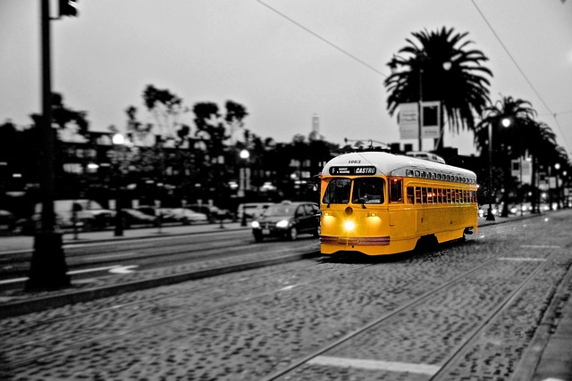

Hover over the images to explore different types of San Francisco Muni vehicles!

Muni operates an extensive fleet of buses that cover a vast network of routes throughout the city. Buses are a practical and accessible mode of transportation, serving neighborhoods and major thoroughfares.

The Muni Metro is a light rail system that runs underground through the city center and then transitions to surface-level tracks in other areas. It offers a quick and efficient way to traverse San Francisco.

San Francisco's iconic cable cars are not just a mode of transportation but also a tourist attraction. They provide a historic and scenic journey in the heart of the city, with routes such as Powell-Hyde and Powell-Mason.

Muni's historic streetcars, often referred to as the F-line, feature vintage vehicles from around the world. They operate on Market Street and the Embarcadero, offering a charming and nostalgic way to explore the city.